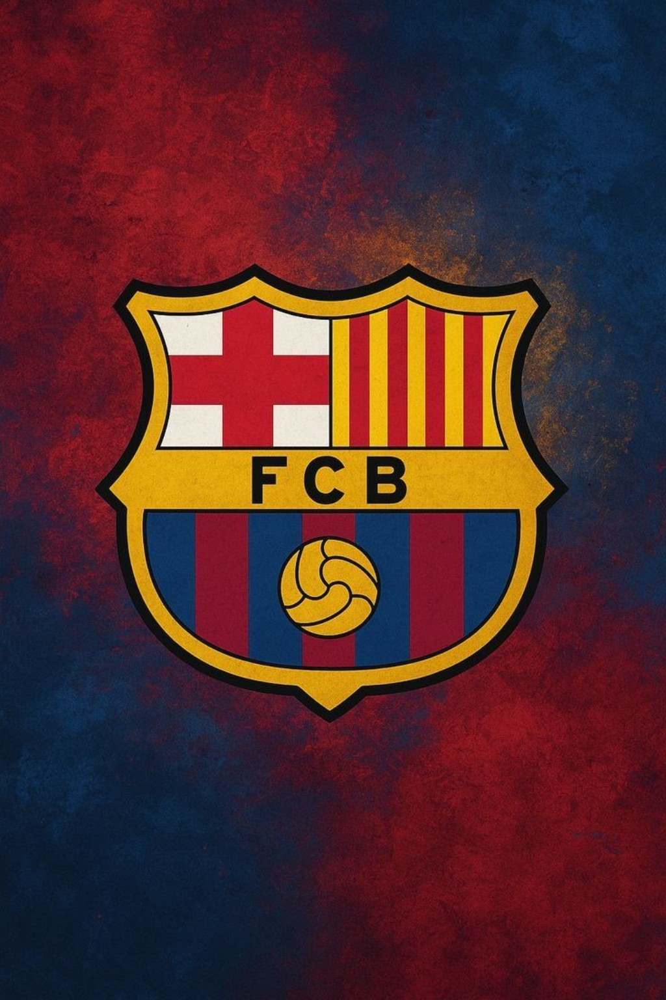

INSTRUCCIONES · PORTADA
01
Explora la portada y pulsa “Abrir el álbum” para entrar al tocadiscos. En la siguiente pantalla encontrarás la playlist y los controles de Spotify.
EDICIÓN PERSONAL · VINILO DIGITAL
La música
también guarda
recuerdos.
Una colección de canciones reunidas en un solo lugar. Abre la caja, coloca el disco y deja que suene.
Abrir el álbumREPRODUCE · RECUERDA · REPITE

SIDE A
1990s
1990s
BLUE MEMORIESVINYL EDITION · Nº 001